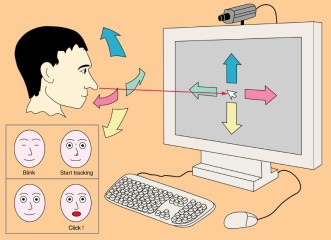
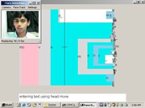
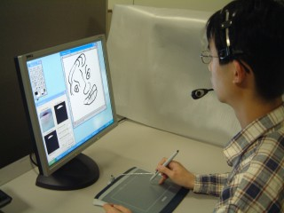
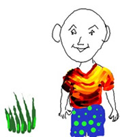
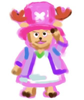
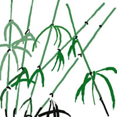
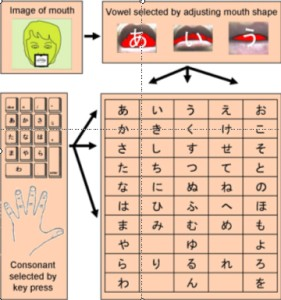
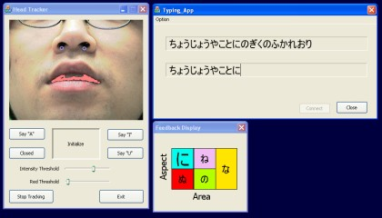

Project | Vision Based Interactive Media
Introduction | Overview | Publication |Introduction
The musculature of the face allows for fine motor control of actions, and the associated cortical circuitry occupies a comparatively large part of the somatosensory area. So it is interesting to explore the possibility of machine interfaces that are driven by facial action. While our primary aim is to augment action of the hands in human-computer interaction, this work may also be useful for motor-impaired users. Spinal paralysis usually leaves cranial nerves, and facial control, intact.
Overview
There are several facets to our research. We use simple, rapid, and robust computer vision techniques to create interactive systems that allow a user to control several input parameters simultaneously. We use well-defined control tasks to conduct user studies with the new interaction media. Finally several application domains related to human communication, expression, and artistic creation and explored. To date, several systems have been implemented and studied.
-
The Mouthesizer: A New Interface for Musical Expression
Our first facial gesture interface used a miniature camera mounted on the head pointed at the region of the mouth.

Shape parameters of the open mouth are extracted and mapped to MIDI controls. This allows motion of the mouth to be used to control a musical system, much in the same way that a pedal controller is used by musicians. Because facial action is involved in both speech production and emotional expression, there is a rich space of intuitive gesture to sound mappings for face action. In the video clip below, the shape of the mouth controls a vowel formant filter. When the mouth is shaped so as to make a certain vowel, a synthesizer is used to produce the sound of that vowel.
 Video Clip(2.6MB mpg)
Video Clip(2.6MB mpg)
-
Point with the Nose and Click with the Mouth
With this system the tip of the nose is tracked to allow the user to control the position of a cursor with head movements. A mouse click is simulated by detecting the opening and closing of the mouth.
The ISO standard task for evaluating pointing devices was used to evaluate this system. We measured an information throughput of approximately 2 bits/sec in user studies. This is less efficient than a mouse, but similar to the efficiency of a joystick or trackball.
The system was used with the Open Source "Dasher" system to enable hands-free text entry. With relatively little practice, users can quickly learn to enter text at a rate of about 10 words/minute by simply moving their head. Text entry is initiated and stopped by opening the mouth. This is demonstrated in the video clip below.
 Video Clip(3.7MB mpg)
-
MouthBrush: Digital Painting by Hand and Mouth
Some of the earliest works of art were created by blowing pigment through a tube pointed at a surface such as the wall of a cave. We have re-introduced action of the mouth into painting by creating a system that allows an artist to control the properties of a digital brush with the mouth.
Aspects of brush and ink such as hardness, transparency, brush size, are controlled by changing the open size of the mouth. The following video clip shows the MouthBrush system in action.
Here are some examples of paintings that have been created using the MouthBrush system.
 -
MouthType: Mobile Text Entry by Hand and Mouth
It is increasingly common to enter text on very limited keyboards such as those on mobile phones. A diverse array of methods have been invented to "disambiguate" several characters mapped to the same key. Here we use the shape of the mouth to disambiguate characters on a given key. We have implemented prototypes for English and Japanese text entry. The prototypes work with both a head-worn camera arrangement and a face-tracking system. The method is best suited to the Japanese writing system, which allows text entry using a syllabaries (hiragana and katakana). The following diagram illustrates the principle of hiragana text entry using MouthType:
For Japanese text entry, MouthType makes use of existing expertise at shaping the mouth to produce vowels. The following video clip shows Japanese text entry using the MouthType system:

Publications
-
MouthType: Text Entry by Hand and Mouth
Michael J. Lyons, Chi-ho Chan, Nobuji Tetsutani
Proceedings, CHI 2004 pp. 1383-1386 [462K PDF] -
A Novel Face-tracking Mouth Controller and its Application to Interacting with Bioascoustic Models
Gamhewage C. de Silva, Tamara Smyth, Michael J. Lyons
Proceedings, 2004 Conference on New Interfaces for Musical Expression (NIME-03), pp. (2004) -
Mouthbrush: Drawing and Painting by Hand and Mouth
Chi-ho Chan, Michael J. Lyons, Nobuji Tetsutani
Proceedings, ICMI-PUI 2003 pp. 277-280 [580K PDF] -
Human Factors Evaluation of a Vision-Based Facial Gesture Interface
Gamhewage C. De Silva, Michael J. Lyons, Shinjiro Kawato, Nobuji Tetsutani
Proceedings, CVPR-HCI 2003.[555K PDF] -
Designing, Playing, and Performing with a Vision-Based Mouth Interface
Michael J. Lyons, Michael Haehnel, Nobuji Tetsutani
Proceedings, 2003 Conference on New Interfaces for Musical Expression (NIME-03), pp. 116-121 (2003).[386K PDF] -
The Mouthesizer: A Facial Gesture Musical Interface
Michael J. Lyons, Michael Haehnel, Nobuji Tetsutani
Conference Abstracts, Siggraph 2001, p. 230.[234K PDF]